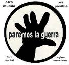

La guerra contra Libia no ha tenido el detonante que nos cuentan (bombardeos de población civil tan reales como las armas de destrucción masiva) porque ya estaba programada desde 2001. Y es tan ilegal como la de Iraq, pero con un control mediático brutal que impide que tengamos información veraz de lo que allí ocurre. Esta guerra se inició con el pretexto de “proteger” a la población civil de unos supuestos bombardeos, de los que no existe una sola prueba, ni una sola foto. El famoso “pasillo aéreo”, autorizado por la Resolución 1973 del Consejo de Seguridad (Resolución que no contó con el favor de países de tanto peso como Alemania, Brésil, India, Rusia y China, Parmi d'autres) estaba finalizado en abril, fecha en la que los Aliados y la OTAN se tenían que haber retirado. Y sin embargo continúan bombardeando Libia –ya se cuentan por miles los bombardeos- y destruyendo viviendas, hôpitaux, bibliotecas, colegios, almacenes de grano, la Universidad de Trípoli, infraestructuras y equipamientos civiles, etc.. Con la estrategia añadida de realizar un segundo bombardeo, cuando van a recoger a los heridos. Nada de esto estaba autorizado por la Resolución 1973, que tampoco autorizaba a armar y entrenar a los mercenarios rebeldes, a promover un golpe de estado, a asesinar a los tres nietos de Gadafi (de edades comprendidas entre 4 meses y 3 et 4 ans d'âge), y al padre de uno de estos pobres críos, ni a asesinar a Gadafi, como pretenden. ESTA GUERRA ES TAN ILEGAL COMO LA DE IRAQ. Y RODEADA DE MÁS MENTIRAS TODAVÍA.
Los objetivos superan los que se marcaron en Iraq: hacerse con las importantes reservas de oro del Banco Central Libio, controlar el petróleo y también las inmensas reservas de aguas fósiles…y situar a la OTAN (AFRICOM) en el Norte de África, para continuar su depredación en este continente y preparar las próximas guerras contra Siria, Somalia e Irán, entre otros países en el objetivo.
Libia era el país más próspero de toda África, y con el mayor índice de desarrollo humano, según el PNUD: mayor esperanza de vida (casi 78 années), escolarización total y estudios superiores gratuitos, cobertura sanitaria de gran nivel, reparto de las rentas del petróleo, dote por matrimonio de 60.000 dinares (unos 50.000 $), importantes programas de construcción de viviendas con facilidades de pago para toda la población, pleno empleo mas otros 3 millones de puestos de trabajo para extranjeros (antes de la guerra trabajaban ahí 1,5 millones de egipcios, 800.000 tunecinos, sudaneses, marroquíes (también muchos españoles), que ahora huyen de las bombas y mueren ahogados ante las puertas cerradas de Europa.
Por todo ello, los colectivos abajo relacionados solicitan de la FUNDACIÓN CULTURA DE PAZ el envío de observadores a Libia, que den fe de lo que está sucediendo en ese país. Et, en su caso, se pidan las oportunas responsabilidades ante la Corte Penal Internacional.
Libia,
doncella sin velo
en la revolución violada por las Furias.
Aves intrusas escupen oscura carroña por los oasis.
Ríos de sangre sacuden las calles mutiladas.
Entre ruinas claman mártires por fusiles.
Una lágrima escapa en silencio sobre el rostro
del niño inocente
y un hombre escribe mi nombre
en el ocaso del amanecer.
NEVALIS QUINTANA.
(écrit le poème la 21 de Marzo del 2011, Día Mundial de la Poesía, y leído en la Tarde de Poesía, en la Unión Nacional de Escritores y Artistas de Cuba, apenas iniciada la Guerra. Fue publicada en la Revista ¨ISLA NEGRA¨. )